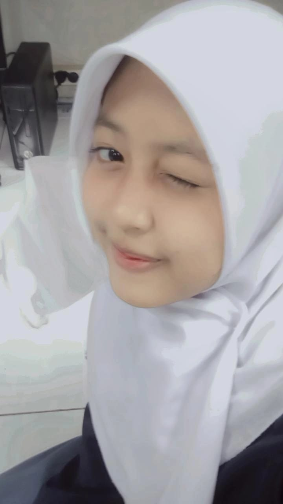

一 Hai wanita cantik setelah Ibu, wanita baik setelah Ibu, wanita kuat setelah Ibu, happy girlfriend day ya cantikku.
Semoga kita bisa lebih lama lagi bersama ya, kalau perlu sampai menua bersama, hehe. Sayangku, maaf ya kalau kadang aku bikin kamu kesal, bad mood, atau marah karena sifatku yang kadang kurang baik ke kamu.
Makasih karena berkat kamu, aku jadi tahu bahwa tidak semua kebahagiaan itu tentang uang atau harta. Salah satu kebahagiaan itu adalah punya cewek cantik, baik, sabar, lucu, perhatian, pokoknya perfect banget! Kamu selalu sempurna di mataku, ALWAYS PERFECT GIRL.
Kok aku bisa ya punya pacar sesempurna ini? Kamu itu sempurna banget loh, sayang, makanya aku takut kamu diambil orang lain, takut kamu ninggalin aku yang banyak kurangnya ini. Takut kalau kamu bosan sama aku, dan yang paling aku takutkan adalah kalau aku nggak bisa bikin kamu bahagia.
Mau sebanyak apapun masalah yang ada di hubungan kita, kita selesaikan bareng-bareng ya, sayang, bukan malah menyelesaikan hubungannya.
Jadi, kita harus sama-sama selesaikan masalahnya, oke cantik? Jaga kesehatannya juga ya, sayang, jangan sering begadang, telat makan, dan lain-lain.
Kamu terlalu sempurna buat dideskripsikan dengan kata-kata. Jadi aku cuma bisa bilang, love you more than anything! 💕
makasih yah atas kasih sayangnya makasih atas perlakuan baiknya aku benar benar nyaman saat ada di samping kamu, makasih yah udah buat kenangan yang baru sama aku, kita saling pokus ke depan yah jangan pernah liat kebelakang, and sama sama terus sama aku ya aku sayang banget sama kamu, aku ga mau kehilangan perempuan seperti kamu, makasih kamu ngga pernah liat kekurangan aku, makasih udah Nerima semuanya, aku akan selalu inget apa aja yang kita lakuin dan gimana kamu manjanya ke aku yang kalo jalan selalu minta di gandeng, yang sukanya di peluk kalo ketemu, aku ga tau harus bilang apa lagi yang jelas aku bangga dan bersyukur punya kamu, cinta aku ke kamu g akan ada habisnya aku akan memperjuangkan itu sampai kita pulang di rumah